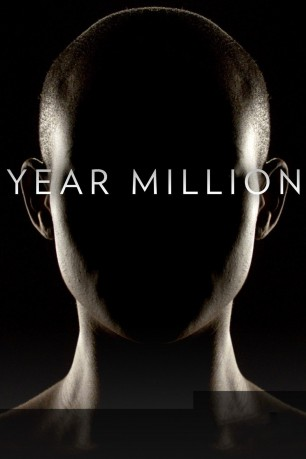

")
 
 IMDB-Wertung: 7.4 / 10
IMDB-Wertung: 7.4 / 10  Metascore:
Metascore: 
Wie sieht das alltägliche Leben in der Zukunft aus? Diese Dokumentarserie lässt führende Wissenschaftler wie Ray Kurzweil, Michio Kaku, Peter Diamandis und Brian Greene zu Wort kommen. Sie zeichnen ein Bild von unserer Zukunft, das auf den ersten Blick nach Science Fiction aussieht. Doch die Entwicklung u. a. von künstlicher Intelligenz schreitet so schnell voran, dass die in dieser Serie gezeigten Szenarien alles andere als utopisch sind.
Jahr: 2017
Dauer: 46 Minuten
FSK:
Land: USA Studio: National Geographic ChannelTonspuren:
Untertitel:
Auflösung: 720p (1280x720) Größe: 1116 MB
Genre: Drama, Sci-Fi, Dokumentation, TV-Serie
Regisseur: Mark Elijah Rosenberg
Drehbuch: RadicalMedia
Soundtrack:
Darsteller:
 Karen Gagnon als Domenica
Karen Gagnon als Domenica Reece Ritchie als Oscar
Reece Ritchie als OscarDatei: X:\Dokumentationen\Internet+Science\Year Million - Blick in die Zukunft\Year Million Blick in die Zukunft S01E01 Mensch 2.0.mkv seit 12.10.2017
Festplatte: HD Serien(SU-Z)+Dokus+Musik
 Es gibt insgesamt 25 Filme in der Gruppe 'Dokumentationen\Internet+Science'
Es gibt insgesamt 25 Filme in der Gruppe 'Dokumentationen\Internet+Science'